雨上がりの風景 [梅吉]
寒い雨が上がってカラッと晴れた日、お部屋で傘を干していたら・・・
（風が強くて外に干せませんでしたwww）

やっぱり来た。

![[猫]](https://blog.ss-blog.jp/_images_e/101.gif) み〜た〜な〜
み〜た〜な〜
見てますよ、ついでに写真も撮ってます＾＾

どうして傘を見ると走ってくるんでしょうね、梅吉さんは。
特別なことをするわけじゃなく

お顔を洗ったりいつもとおんなじことするだけなのに。
秘密基地にいるような感覚なのかな？
だったら前々から気になっていたこんなのがあるのですよ。梅吉さん。
喜びそうだなぁ・・・でも場所取りそうだなぁ・・・
きっとがぶがぶして壊すんだろうなぁ・・・

せやで まちがいない わしは きたいにこたえるおとこやからな
ですよねー(꒦ິ⌑꒦ີ)

梅吉のねこ草（燕麦）に小穂が出て来ました。
小穂が燕っぽいので燕麦なんですって。
この状態で小さな花が咲いて実が出来るようです。
このまま育てて種を収穫してみようかな＾＾
ねこ草の種として流通しているものは一世代ものが多くて
こうなるのは珍しいみたいです。
Amazonで買ったものなんですけどね。
 ↑ガブッと一押し↑
↑ガブッと一押し↑
早くもバラの季節になりましたね。
連休中に植物園のバラ園に行って来ました。
買い物の予定もなかったので珍しくデジイチを持って出かけましたよ。
ブログに使っている梅吉の写真は私の撮った写真も多いですが
外出時の写真は100パーセントおっとの撮影です。
だって、カメラは重いので持ち歩くのがイヤなんです(^▽^;)
肩が凝って具合悪くなっちゃうw
両手がフリーになるようにリュックにしてじゃんじゃん撮りますよー(๑˃̵ᴗ˂̵)و
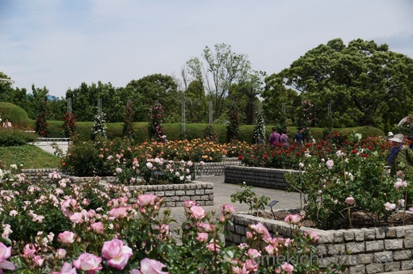
思った通り満開です。
広い範囲を写す場合でもメインをどこに置くか決めなくちゃいけないのかな。
なんだか漫然とした写真です。
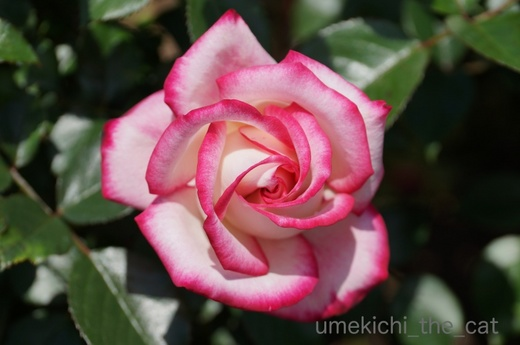
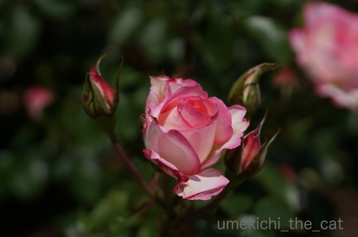
花のクローズアップ。
上の写真みたいにくっきりはっきり撮るか、下のようにちょっとニュアンスを持たせるかでも
ずいぶん雰囲気が変わりますよね。
そのさじ加減はどこにあるのかしら・・・。
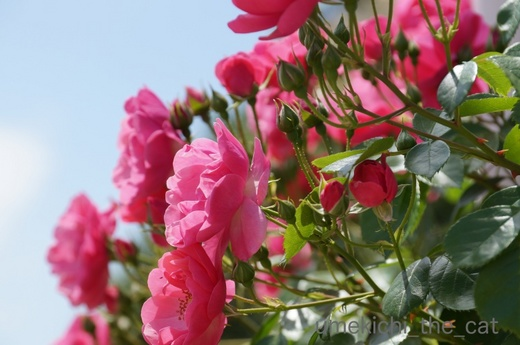
これは太陽に向かって「にっこにこー」なバラを撮ってみたのですが
中途半端にお花がフレームアウトしています(-_-メ)
花を撮るの、難しい！！
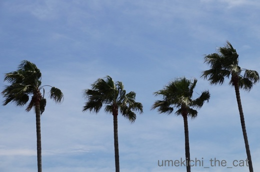
これは強い風を写してみました。
右端が中途半端ですよねー。
（右端の余計な部分をトリミングして写真を入れ替えたのですがブログに反映されません。
１日寝かせてもみました。この現象、時々あるのですが私だけ？？）
と思ったら反映されてるよ！！！（追記）
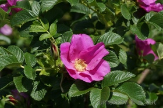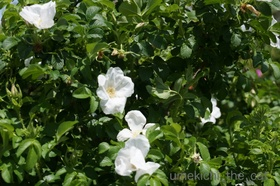
これは覚え書き的写真。ハマナスが咲いていました＾＾
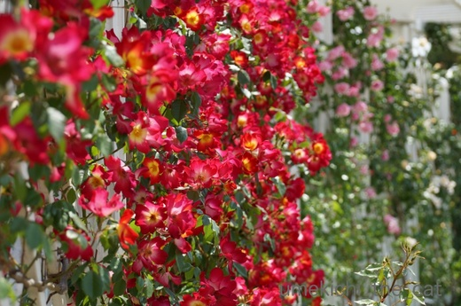
うるさいぐらいに咲き誇る様を写してみました。
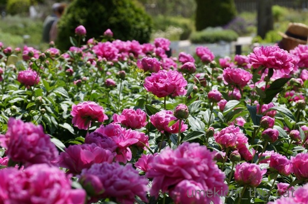
ここからお花は芍薬に変わります。
たくさんお花が写っていれば未熟な腕をカバーできるかも
と姑息なことを考えてみる。
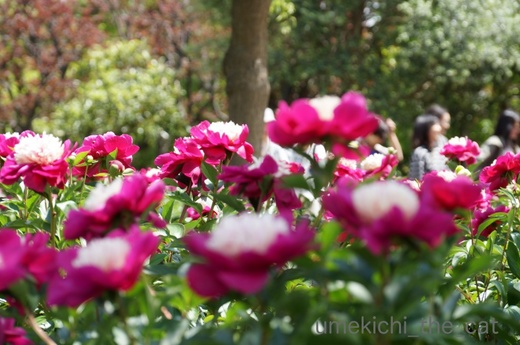
これもどこに焦点があるのかいまひとつはっきりしませんが
遠くに歩く人の楽しげな表情が感じられて
休日らしい風景が撮れたかなと思った一枚でしたよ＾＾
自分で写してみてお花や風景写真の奥の深さを感じました。
ソネブロガーのみなさんは上手に撮影されているなーって
改めて思いました！！
なお、今度いつカメラを手にお出かけするかは全く未定ですwww
やっぱり重かった・・・
（風が強くて外に干せませんでしたwww）

やっぱり来た。

見てますよ、ついでに写真も撮ってます＾＾

どうして傘を見ると走ってくるんでしょうね、梅吉さんは。
特別なことをするわけじゃなく

お顔を洗ったりいつもとおんなじことするだけなのに。
秘密基地にいるような感覚なのかな？
だったら前々から気になっていたこんなのがあるのですよ。梅吉さん。
喜びそうだなぁ・・・でも場所取りそうだなぁ・・・
きっとがぶがぶして壊すんだろうなぁ・・・

ですよねー(꒦ິ⌑꒦ີ)

梅吉のねこ草（燕麦）に小穂が出て来ました。
小穂が燕っぽいので燕麦なんですって。
この状態で小さな花が咲いて実が出来るようです。
このまま育てて種を収穫してみようかな＾＾
ねこ草の種として流通しているものは一世代ものが多くて
こうなるのは珍しいみたいです。
Amazonで買ったものなんですけどね。
早くもバラの季節になりましたね。
連休中に植物園のバラ園に行って来ました。
買い物の予定もなかったので珍しくデジイチを持って出かけましたよ。
ブログに使っている梅吉の写真は私の撮った写真も多いですが
外出時の写真は100パーセントおっとの撮影です。
だって、カメラは重いので持ち歩くのがイヤなんです(^▽^;)
肩が凝って具合悪くなっちゃうw
両手がフリーになるようにリュックにしてじゃんじゃん撮りますよー(๑˃̵ᴗ˂̵)و
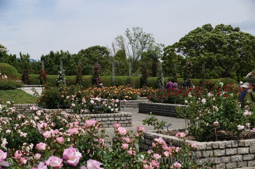
思った通り満開です。
広い範囲を写す場合でもメインをどこに置くか決めなくちゃいけないのかな。
なんだか漫然とした写真です。
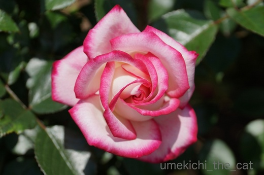
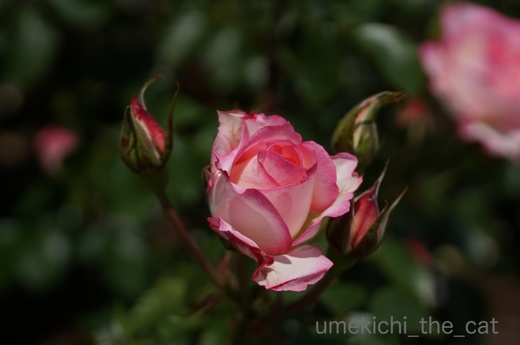
花のクローズアップ。
上の写真みたいにくっきりはっきり撮るか、下のようにちょっとニュアンスを持たせるかでも
ずいぶん雰囲気が変わりますよね。
そのさじ加減はどこにあるのかしら・・・。
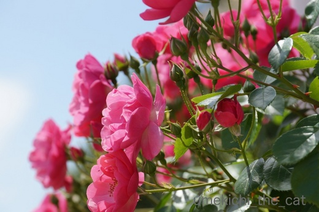
これは太陽に向かって「にっこにこー」なバラを撮ってみたのですが
中途半端にお花がフレームアウトしています(-_-メ)
花を撮るの、難しい！！
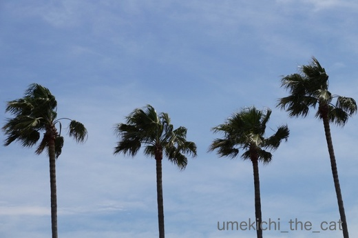
これは強い風を写してみました。
右端が中途半端ですよねー。
（右端の余計な部分をトリミングして写真を入れ替えたのですがブログに反映されません。
１日寝かせてもみました。この現象、時々あるのですが私だけ？？）
と思ったら反映されてるよ！！！（追記）
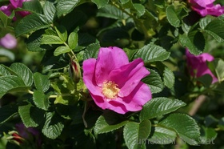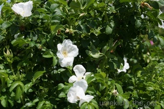
これは覚え書き的写真。ハマナスが咲いていました＾＾
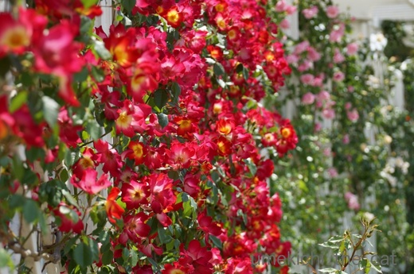
うるさいぐらいに咲き誇る様を写してみました。
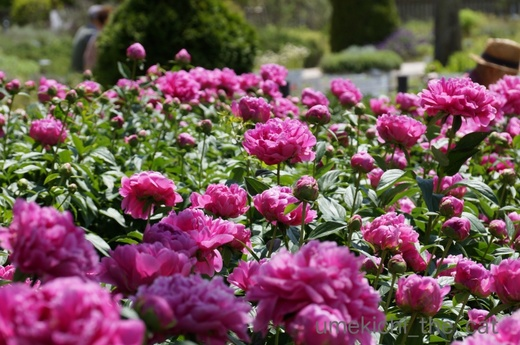
ここからお花は芍薬に変わります。
たくさんお花が写っていれば未熟な腕をカバーできるかも
と姑息なことを考えてみる。
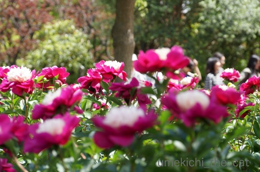
これもどこに焦点があるのかいまひとつはっきりしませんが
遠くに歩く人の楽しげな表情が感じられて
休日らしい風景が撮れたかなと思った一枚でしたよ＾＾
自分で写してみてお花や風景写真の奥の深さを感じました。
ソネブロガーのみなさんは上手に撮影されているなーって
改めて思いました！！
なお、今度いつカメラを手にお出かけするかは全く未定ですwww
やっぱり重かった・・・

カフェオレ色の梅吉

梅吉 2023年8月10日 永眠


梅吉と出会った譲渡会

犬猫の理由なき殺処分ゼロ
妄想広告
UMEKICHI 光

爆発的に早い！
時々攻撃的！
Thanks to Mr.Boss365
爆発的に早い！
時々攻撃的！
Thanks to Mr.Boss365

どや？ 水も滴る良い男やろ？ キレイに撮ってな(⌒～⌒)とドヤ顔なのかしら(^_^;)
やはり花はいいですね(〃'∇'〃) 色の白いは七難隠すじゃないですが、お花の御写真は
どう撮っても素敵に見えるかと(^^)ヾ(￣o￣;)ｵｲｵｲ 失礼なんじゃないか？ おそらく
腕自慢のSo-netブロガー達が次々とタメになるアドヴァイスをしてくれると予想(^^)
それらを読んだ室生寺五重塔の撮影者が真打登場とばかりに手取り足取り指導(^_^;)
by middrinn (2018-05-11 16:50)
秘密基地の中の梅吉さん♪
なんだかとっても居心地が良さそうです！
ティピー入っている梅吉さんを
想像したら可愛くてしかたがありませんね(#^.^#)
by きぃ (2018-05-11 16:53)
黒い傘にカフェオレ色の梅吉さんが合いますね〜
囲まれた空間が好きなのでしょうね。
最後はちぃさんのために、キリッとポーズを取ってくれたような気がします。
皆さんのカメラの写真は綺麗ですよね〜
私はiPhoneで撮りますが、中々ね〜
我が家は、いつの頃からかカメラを使わなくなりましたよ。
by kiki (2018-05-11 16:56)
お花の写真綺麗です~。
傘の部屋干しはうちではできません。玄関に置いていた傘を今までに3本破かれました。以前はテントもありましたがネコ団子でぎゅーしてるうちに変形崩壊しました。
by zombiekong (2018-05-11 17:25)
梅吉さん、スタジオで写真撮影かと(^▽^;)
噛み噛み猫がいる我が家でも傘は干せず、折り畳み傘を畳むのも一苦労です。
植物園の写真、めっちゃキレイじゃないですか(*^▽^*)
我が家は写真の腕は圧倒的に相方が上なんですが、残念なことに花を見る目がない^^;
なので私が「この花、こっちからこの角度で撮って！」とお願いして撮ってもらう事が多いです。私は数打てば当たる方式でバシャバシャ撮りまくりまーす♪
by ゆきち (2018-05-11 19:38)
梅吉さん、穴とか箱に入っている感じなのでしょうか？
傘の下でおとなしいですね(^^)
by ma2ma2 (2018-05-11 20:30)
梅吉さんは期待を裏切りませんね(^^)
by kou (2018-05-11 21:16)
猫さんの写真の背景にいつも困っています。
散らかし放題のリビングなので(^^;
小物を使おうと、前から思っていました。傘の手があったんですね。
梅吉さん、モデルさんみたいです。
デジイチの写真は、色々考えて撮っている事に驚愕します。
私は何も考えてないです(^^;
by riverwalk (2018-05-11 21:23)
梅吉さん、ひょっとしてコウモリ好きなのかな～？ ^^)
猫草の穂、初めて見ました！
花の撮影はとても難しいですよね。
あ・・・、黒猫撮影も難しいですー。^^;
by yes_hama (2018-05-11 21:47)
梅吉さん、傘が好きなんだね＾＾
あかりも箱ものに入ったら、まず毛づくろいしてます。
安心なのかな？( ´艸｀)
薔薇がきれいな季節ですね！
私もバラ園、行かなくっちゃ(≧▽≦)
by マーヤ (2018-05-11 22:56)
これなら出しておいても安心ですね。
我が家では骨が曲がるし穴が開きます（爆）
種を蒔いて育てる猫草もありますから
これも蒔けば芽が出るんじゃ？
by ぽちの輔 (2018-05-12 06:16)
私、写真はコンデジのみ。
デジイチ持ってませんしー(^_^;)
やっぱりでかくて重いのが嫌です。
むしろ撮ってから、フォトショで補正に
時間をかける派ですわ。
by よーちゃん (2018-05-12 08:17)
傘と・・・絵になるオトコだにゃー♪ グラビアみたい！
気持ちよい、百花繚乱の季節になりましたねー。暑くなる前におでかけしたいなー。。。
by Ginger (2018-05-12 11:57)
あああ、一回書いたコメントが消えちゃった(ToT
くじけずもう一回！(笑)
猫草に穂が出るなんてすごいわ。うちなんてこうなるまえに
シナシナになって枯れちゃうものー。
梅吉君もやっぱり傘が好きなのね^ｍ^
絶対入るよねーーーｗｗ
Amazonのこの商品、友達が持っていて、めっちゃインスタ映えしてます(笑)
ちぃさんのおうちに似合うと思うわ^^
ソネブロの人は写真上手な人が多いよね〜〜
わたしは ALL スマホだけどね^^;
よーちゃんさんと同じくフォトショで補正や加工してるよｗｗ
by リュカ (2018-05-12 12:00)
ウチも、傘を干すと、速攻でもぐりこまれますよ(^.^)
花の写真、どれも素敵ですよ〜♡
あっ、もちろん梅吉さんの写真も♡
by のらん (2018-05-12 12:18)
うちも傘干すと嬉しそうに飛んできます=(^.^)=
透明傘でもですw
ただ梅吉さんのように秘密基地でまったり寛いで
くれるなら良いのですが、ノエルさんは止める部分を
ガジガジしてくれるんですよねぇ(⌒-⌒; )
おかげで我が家の傘はノエルさんの歯型付きばかりです(*_*)
by ニッキー (2018-05-12 13:04)
黑い傘をバックに立つ梅吉くん映えてますね(*^^*)
傘にはガブガブしないのですね。梅吉くんたらおりこうさん!!
by palpal (2018-05-12 19:44)
傘がお好みって面白いですね^^
by ryang (2018-05-12 20:21)
黒い傘をさす紳士といった風情かな＾＾
お似合いです。
写真、私は撮る時、構図はこだわりますが
単に自分の好みというだけ~デス。
by ふにゃいの (2018-05-12 21:28)
傘が好きなんですね。
猫草って育つとこんな風になるだぁ。
いつも育つまで残った事がないので知りませんでした。
by 響 (2018-05-13 02:07)
傘を玄関で広げると、うちの猫もこんなふうにやってきました。
どうしても入りたいらしくて＾＾
梅吉さんが急いでやってくるの、わかる～なぜかは知らないけど＾＾
もう薔薇の季節なんですね！
どれも豪華だわぁ‥素敵＾＾
お花の写真は、よく撮ろうとすると～難しいですよね。
でもどう撮ってもまず綺麗！というところもあるからいっか～と思ってアップしてます＾＾
by sana (2018-05-13 21:18)
傘の下に佇む梅吉くん。可愛い～♪
傘のCM？ポストカード？まさしくきたいにこたえるおとこだわ。
カメラ重たいものね。
でも、ちぃさん撮影のお花の写真も素敵♪また見たいな(*^-^*)
by emi (2018-05-13 23:03)
黒い傘がきいろをより引き立てていますね（*´ー｀*）
うちのもよく入って（かかって）おりますが
わたしは傘を玄関の下に置くので・・・土足・・・。
ねこ草、ここまで育つ（行きている）のはすごいですね！
花、きれいですね。やっぱり青空に映える！
そして芍薬畑！？これだけあると芍薬が小さく見えちゃいます^^;
by Ja-Kou66 (2018-05-14 00:29)
middrinnさん＞
そうですよねー＾＾ボケボケ写真じゃない限り
お花はアラを隠す力があるかと(´▽｀)
その力に頼り切っちゃいますよー！！
我が家には『写真なんちゃら・・・』と題した指南書が数冊あるので
それを読んでみようかな。
少し写真を撮り慣れた今なら得るものがあるかも！
皆様のアドヴァイスがちゃんと理解できるのはそれからになりそうです(〃▽〃)
きぃさん＞
狭いところや閉鎖空間が好きな子供っていますよね！
私は大好きだったので梅吉の気持ちが分かります＾＾
今でも狭いところ嫌いじゃないし。
ティピーを買ったらまず入るのは私かもwww
kikiさん＞
背景が白の時とまた違った雰囲気になりますよね。
梅吉の男っぷりが上がったような(*>艸<)
カメラを使わない（持ち歩かない）わかります！！
かつてはコンデジを持ち歩いていたのですが
スマホのカメラ性能が上がるにつれて持ち歩かなくなりました。
荷物は少ない方が良いし。
そのうちデジイチに引けを取らない写真が撮れるスマホになって
でっかいカメラを持ち歩いていた時代があったよねー
なんてことになるかもしれませんねw
zombiekongさん＞
お褒めのお言葉ありがとうございます♪
写真はレンズにも大きく左右されるのですが
レンズの底なし沼にはハマらないようにしております。
まずは手持ちのレンズでうまく撮る方法を見つけたいな＾＾
傘もテントも壊されましたか・・・
スットコランドは戦場ですね(*>艸<)
もっとも梅吉も目を離せませんよ。やっぱり傘をガブガブしますから(^▽^;)
ゆきちさん＞
ありますね！パラソル型のレフ板！！
今回傘は梅吉の男っぷりをあげるのに役立ったようです(*>艸<)
写真は撮り始めると楽しくなりますね♪
バラの季節にもう一度撮りに行きたいななんて思っていますが
今後気温がアホみたいの上昇するようなのでバラは咲いているかなぁ。
私も数打ちゃ当たる方式でまずは撮りまくりたいと思います！！
ma2ma2さん＞
狭いところは落ち着くようですねー＾＾
大人しいのは初めだけでそのうち傘をかじり始めるんですよw
by ちぃ (2018-05-14 08:19)
kouさん＞
行動が思った通りすぎて笑っちゃうんですよー(*>艸<)
riverwalkさん＞
ビニガサはだめですよー(*>艸<)
男性用の大きな黒い傘は沢山の物を隠してくれますwww
riverwalkさんは本能で写真を撮っていらっしゃる！
風景が「こう撮ってね」と語りかけてくるとか・・・
かっこいいわぁ♡
yesa_hamaさん＞
コウモリになりたいのかコウモリを取ってガブガブしたいのか・・・
こうもり傘の方は潜んで良し、ガブガブして良しなようです(^▽^;)
確かにー！黒猫さんの撮影が一番難しいかも・・・
マーヤさん＞
狭い空間が好きですよねー＾＾
寝る時も私の足の間、脇の下がお気に入りの場所です。
そこでちまっと寝るw
広々したところで寝ればいいのにって思いますwww
気温の高い日が続きそうなので
バラが散るもの早そうですよ！！間に合いますように。
ぽちの輔さん＞
大人しいのは最初だけです (^▽^;)
ひとしきりまったりすると留め具のところをガブガブガブガブ・・・
ねこ草の種、うまく収穫できるといいなぁ。
ただいま収穫の方法を調べております！！
よーちゃん＞
ええっΣ(ﾟ◇ﾟ；)よーちゃんの写真はコンデジだったのですね！
夜景の写真がとても綺麗なのでデジイチかと思っていました。
フォトショを操る技術もお持ちな上
コンデジでデジイチ並みの写真を撮る神の手もお持ちなのかも！！
Gingerさん＞
うふふ( ^ω^ ）グラビアアイドル梅吉、なんてー(*>艸<)
気持ちの良い季節のお出かけは最高ですよね＾＾
うっとおしい梅雨が来る前にと
あちこち足を運んでおります。
リュカさん＞
ねこ草を育てて２年目ですがこんなになったの初めてです！
買ったタネが良かったのかな＾＾無事収穫できるといいなぁ。
インスタ映えなんて聞くと欲しくなっちゃうわー！！
梅吉は間違いなく喜ぶと思うのよね。
新しいものを警戒するような子じゃないしw
リュカさんもフォトショ派なのね。
いろいろできて楽しそうだわ！！
くじけずにコメント再投稿ありがとーーーー！！！！
のらんさん＞
先代猫は傘を開くと「きゃ〜〜」っと逃げる子だったので
梅吉の反応は新鮮でした＾＾
ガブガブされるのは想定外でしたがwww
梅吉は可愛いポイントがわかっているので
お花より手強くないですわ♡♡♡
by ちぃ (2018-05-14 15:06)
ニッキーさん＞
ノエルさんがガジガジとは意外な行動！！
クールビューティーなノエルさんは傘をレフ板がわりに
「キレイに撮ってね♡」とポーズをおとりになるかと思ってました。
歯型付き傘、出先でほっこりしそうです＾＾
palpalさん＞
傘、ガブガブするよー (-_-メ)
私が見てて「ダメだよ」と注意すると止めるんだけど・・・
夜中に玄関に干しておいたらガブガブされて
うるさくて眠れませんでしたwww
速攻片付けに行ったら今度は私の足にガブガブ( ･̆ˍ･̆ )
夜中って変なテンションになってるんですよね・・・
ryangさん＞
傘をお好みの猫さん、みなさんのコメントを見ていると
割といるようですよー＾＾
もっとも先代猫は傘を見ると逃げる子だったので
私にとっては新鮮な驚きでしたが。
ふにゃいのさん＞
写真、何か一つにこだわってみる、良さそうですね！！
あれもこれも気にかけていたら写真撮るのがつまらなくなりそうですもの。
まずは自分で「手前味噌」出来ちゃうような写真を撮ろうと思います＾＾
by ちぃ (2018-05-14 15:48)
響さん＞
傘大好きです！かじるのも(〃ω〃)
ねこ草、この時期は１週間ごとに種まきするので
立派に育った鉢が出来上がります。
でもこんな風になったのは初めてです！
sanaさん＞
傘の何がそんなに猫心を捉えるのでしょうねー＾＾不思議w
写真、たぶん拘っちゃうのは自分だけなんですよね。
お花はどう撮ってもキレイが正解ですね(^_－)☆
これからもどんどん撮ろうっと＾＾
emiさん＞
CM、うふふ♡
このあと梅吉が傘にじゃれて穴を開けそうになったので
その画像もセットにして「危険は身近にある」って
路線でならいけるかも〜(*>艸<)
ひと暴れ、の期待には答えてくれましたよwww
お花の写真、そんな優しいお言葉をいただくと
調子に乗ってまたアップしちゃうから！！
Ja-Kou66さん＞
黒が締まった感じをだしてくれました＾＾
玄関土足・・・うちは傘を置いていなくても
玄関のたたきが好きなので土足はしょっちゅうですよー。
細かいこと気にするといろいろ不衛生かもしれませんが
そういうことはあんまり気にならない人になりましたw
（たたきは頻繁に拭くようにはしていますが）
猫飼いあるある？(*>艸<)
芍薬畑は大きな花がわっさわっさとたわわに咲いていて見事でした！
カメラ持って来て良かったなってテンション上がりました！！
by ちぃ (2018-05-14 16:29)